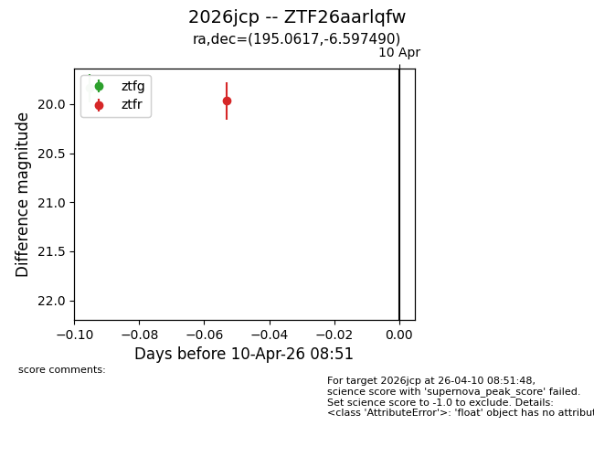
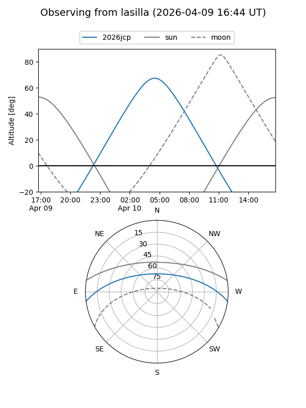
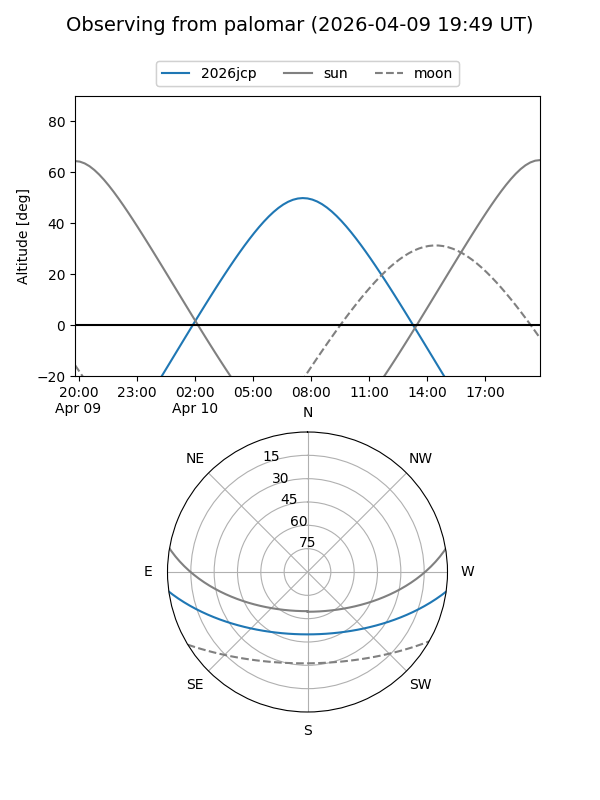

2026jcp
Target 2026jcp at 2026-04-10 08:58
Aliases and brokers:
FINK: link
Lasair: link
ALeRCE: link
TNS: link
YSE: link
alt names
ZTF26aarlqfw (ztf,fink_ztf)
2026jcp (tns,yse)
Coordinates:
equatorial (ra, dec) = 195.0617,-6.59749
equatorial (HMS+DMS) = 13:00:14.81,-06:35:50.96
galactic (l, b) = (306.8673,+56.20693)
Flags:
Photometry:
last ztfg=19.84, ztfr=19.97
1 ztfg, 1 ztfr detections
Lightcurve

Visibility


Additional plots